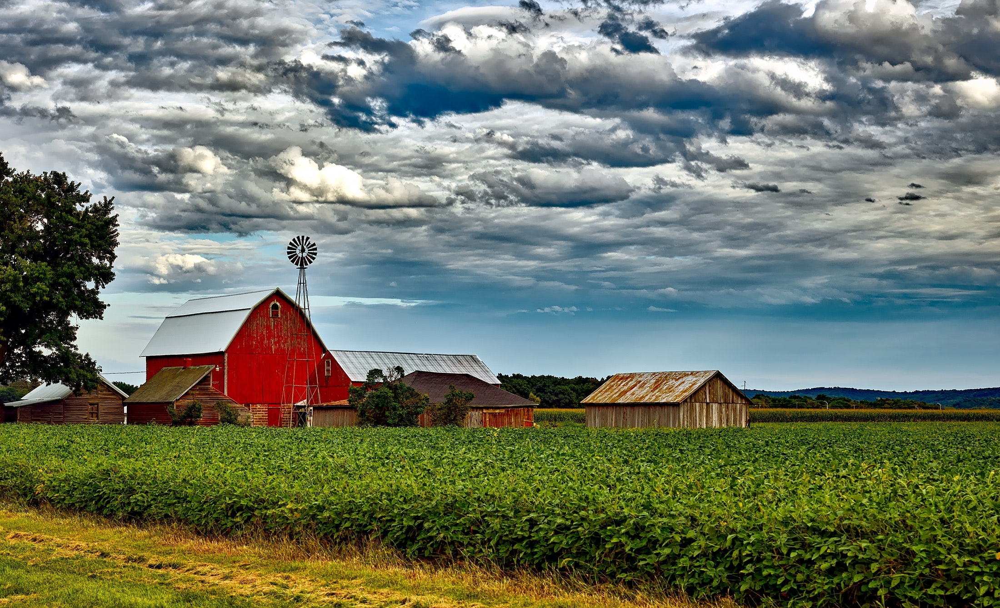
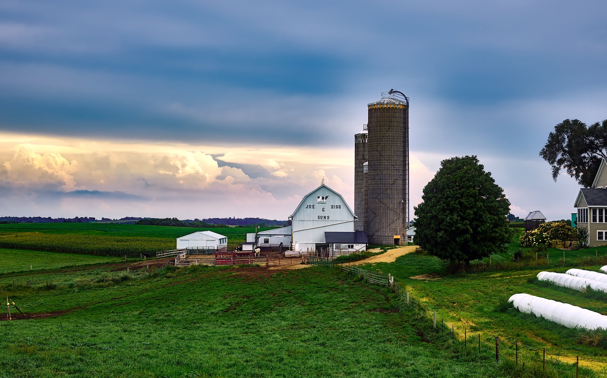
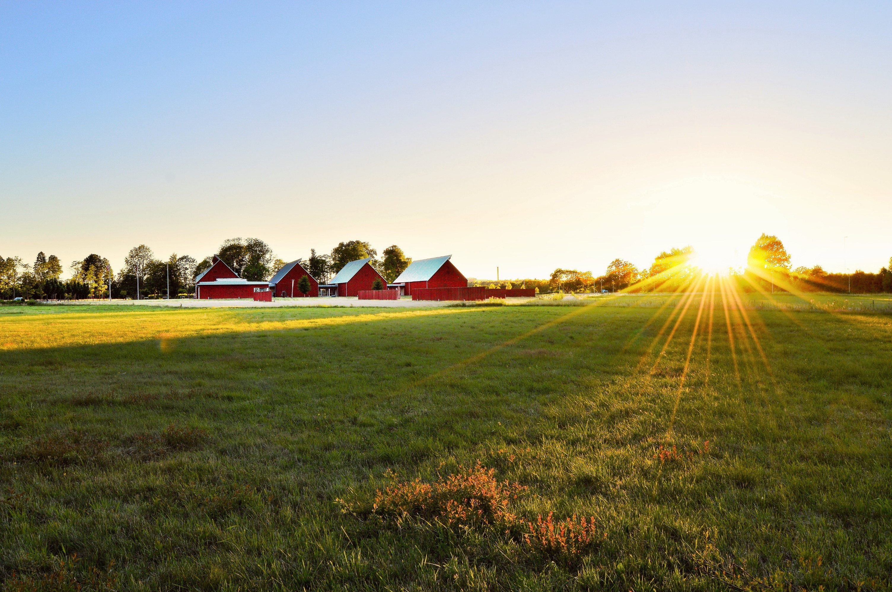

GreenScanner - Veja suas plantações

Medianeira
Medianeira é um município brasileiro localizado no oeste do estado do Paraná. Sua população, conforme estimativas do IBGE de 2018, era de 45 812 habitantes.

Gramado
Gramado é uma cidade com uma estância de montanha situada no estado mais a sul do Brasil, Rio Grande do Sul.

Cantagalo
Cantagalo é um município brasileiro do estado do Rio de Janeiro. Sua população em 2010 era de 19 830 habitantes, dividida nos distritos de Cantagalo, Santa Rita da Floresta, Euclidelândia, São Sebastião do Paraíba e Boa Sorte.

Águas de São Pedro
Águas de São Pedro é um município brasileiro no interior do estado de São Paulo. Pertence à microrregião e Mesorregião de Piracicaba, localiza-se a noroeste da capital do estado, distando desta cerca de 187 km.